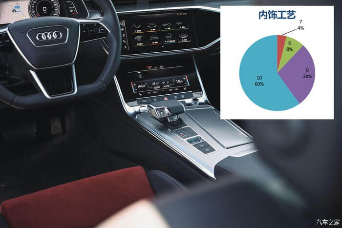
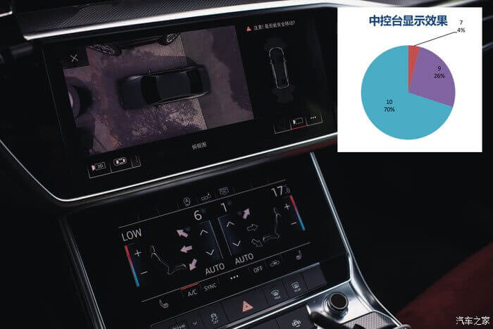
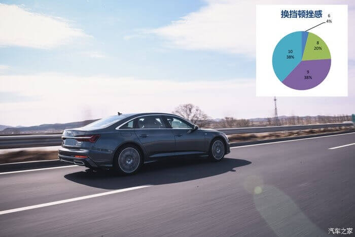

联合全国50位试驾伙伴 万里众测 全新 A6L 数据公开 一目了然！
2019-5-27 01:20:20★测试规则
测试车辆：All New Audi A6L 45TFSI quattro
理由：A6L车型中，关注度最高的系列（数据来自汽车之家）
我们以长春作为起点出发，以接力的形式联合所在地的驾驶伙伴进行测试，如长春驾驶伙伴将车辆驾驶到沈阳，其中共有近300公里的驾驶体验，当长春的驾驶伙伴抵达沈阳后，将车辆交给沈阳驾驶伙伴，随后沈阳驾驶伙伴继续前行至秦皇岛，将车辆交给秦皇岛的驾驶伙伴以此类推，进而行进9688KM，以达到众测的目的。
此次路线途径沈阳、秦皇岛、北京、大同、太原、运城、西安、潼关、洛阳、登封、驻马店、武汉、长沙、南昌、九江、温州、宁波、南京、徐州、泰安、济南、天津等地。
每一位驾驶伙伴会对车辆各个参数进行（0-10分）评分，其中包括：外观、内饰、驾驶&操控、NVH、辅助系统与便携性5大类的评测，而5大类中有包含细节分类。
共收集报告50份，以下是全新A6L详细报告。
★外观方面
关于外观方面的众测共分为4个部分，其中包括：外观打分、车身颜色、各部位间隙、油漆质量。

车身外观方面，在50人的测试报告中有78%的人给予了10分满分的评价，18%的人给予了9分的评价，4%的人给予了8分的评价。
从数据中可以看出，绝大部分人都给予了10分的评价，那么就代表着这一次的造型换代普遍接受度较高，切给予了满意的评价，此次换代造型变得更加加激进，相比于上一代的中庸，全新一代的A6L形态十分运动。
车身颜色方面，在50人的测试报告中有52%的人给予了10分满分的评价，32%的人给予了9分的评价，12%的人给予了8分的评价，4%的人给予了7分的评价。
超过半数的人给予了满分的评价，可以证明“广告色”配色的全新A6L符合大众审美观，而给予7分的参与者均为Q2L、A3车主，他们对鲜艳车漆颜色更为敏感。
在50人的测试报告中有58%的人给予了10分满分的评价，24%的人给予了9分的评价，14%的人给予了8分的评价，4%的人给予了7分的评价。
超过大半部分人接受了全新A6L的各部位间隙与段差，这代表着大家对全新A6L的装配工艺的钣金制造工艺达到了一个较为满意的状态。
在50人的测试报告中有74%的人给予了10分满分的评价，18%的人给予了9分的评价，8%的人给予了8分的评价。
从数据中可以看出，对于车漆质量方面，绝大部分的驾驶伙伴都给予了高分评价。
通过以上数据可以看出，全新A6L的换代“力道中肯”，虽然变的更加动感时尚，但大部分驾驶伙伴都给予了接受以及好评，而部分驾驶伙伴认为车身造型过于激进，有些“用力过猛”。
★内饰方面
关于外观方面的众测共分为10个部分，其中包括：车内空间设计、车内视野、内饰工艺、内饰配色、室内采光与照明、仪表布局、中控台显示效果、座椅舒适度、座椅调节方向、踏板角度。
仪表布局方面，在50人的测试报告中有42%的人给予了10分满分的评价，44%的人给予了9分的评价，10%的人给予了8分的评价，4%的人给予了7分的评价。
这是Audi家族的全新设计，有的与A8极高相似度的内饰造型，三块大屏幕带来了极高的科技感，但依然同外观一样，有些人给予了“科技感十足”的印象，有些人给予了“设计太超前”的印象，总之，有42%的人给予了10分评价，44%的人给予了9分评价，由于众测团队年龄跨度较大，形成此项数据属于正常范围。
车身空间设计方面，在50人的测试报告中有38%的人给予了10分满分的评价，36%的人给予了9分的评价，12%的人给予了8分的评价，10%的人给予了7分的评价，4%的人给予了6分的评价。
中国市场可以说是A6L开辟更加长之路，大空间、大后排的舒适乘坐空间，使得消费者纷纷叫好，从而引得市场纷纷跟随效仿，所以今天的A6L后排成绩并不是十分的突出，很多竞品也拥有同样的参数，而较为中肯的成绩也恰恰说明了这一点，总体评分较为平衡。
座椅可调节方向方面，在50人的测试报告中有50%的人给予了10分满分的评价，28%的人给予了9分的评价，18%的人给予了8分的评价，4%的人给予了7分的评价。
踏板位置与角度方面，在50人的测试报告中有54%的人给予了10分满分的评价，26%的人给予了9分的评价，16%的人给予了8分的评价，4%的人给予了7分的评价。
多向调节的座椅并带有腰部支撑调节，超过大半部分的人给予了高分评价，毕竟身为豪华品牌，这一点的配置到位是无可厚非的，同时踏板位置与角度也的到了同样的高度评价，很容易就可以在A6L上寻找到一个非常轻松舒适的驾驶角度，而给予7分的4%驾驶伙伴则是风琴式踏板的拥簇者。
在50人的测试报告中有20%的人给予了10分满分的评价，48%的人给予了9分的评价，28%的人给予了8分的评价，4%的人给予了7分的评价。
在座椅舒适度方面，评分以9分占据半壁江山，可以理解为大数驾驶伙伴认为只能给予9分评价，因为座椅并不是最高配的座椅，缺少按摩等功能。

内饰工艺方面：在50人的测试报告中有60%的人给予了10分满分的评价，28%的人给予了9分的评价，8%的人给予了8分的评价，4%的人给予了7分的评价。
绝大部分的驾驶伙伴对内饰的工艺给予了高分评价，可以看出全新A6L的内饰工艺还是处于优秀的水平。
内饰配色方面，在50人的测试报告中有60%的人给予了10分满分的评价，8%的人给予了9分的评价，2%的人给予了8分的评价，4%的人给予了7分的评价。
绝大部分的驾驶伙伴对内饰配色方面给予了高分评价，大胆的内饰配色的的确确响应了绝大多数人的需求，至少说在50位不同的驾驶伙伴面前，全新A6L的内饰还是足够吸引人的！
车内视野方面，在50人的测试报告中有38%的人给予了10分满分的评价，36%的人给予了9分的评价，18%的人给予了8分的评价，8%的人给予了7分的评价。
测试评分中可以看出，车内视野处于优秀的水平，而贡献较低分的驾驶伙伴均为Q7车主。
室内采光与照明方面，在50人的测试报告中有64%的人给予了10分满分的评价，24%的人给予了9分的评价，8%的人给予了8分的评价，4%的人给予了7分的评价。
在室内采光与照明方面，绝大多数人都给予了高分评价，说明全景天窗以及氛围灯的加持起到了较好的作用，氛围灯的合理运用很容易营造出豪华的感觉，特别是在夜晚，与大屏幕内饰配合，形成呼应。
中控台显示效果方面，在50人的测试报告中有70%的人给予了10分满分的评价，26%的人给予了9分的评价，4%的人给予了7分的评价。
看来是新大屏中控带来的科技感体验让70%的驾驶伙伴打出了10分的成绩，带有力回馈的中控触摸屏的确是一种非凡的使用体验，仿佛实体按键一般，轻轻点击既会拥有触动感，这样的体验是这个级别车型中独有的。
★驾驶感受与操控方面
关于驾驶操控方面共分为12个部分，其中包括：换挡顿挫感、方向盘指向性、方向盘回正、方向盘行程、车辆高速稳定性、换挡性能、起步加速性、悬架调教、制动效果、转弯时车身侧倾、追越加速性能、方向盘操作力。

在换挡顿挫感方面：在50人的测试报告中有38%的人给予了10分满分的评价，38%的人给予了9分的评价，20%的人给予了8分的评价，4%的人给予了7分的评价。

换挡性能方面，在50人的测试报告中有56%的人给予了10分满分的评价，12%的人给予了9分的评价，24%的人给予了8分的评价，4%的人给予了7分的评价。
7速双离合变速箱表现较为平稳，9分以上成绩共占据76%，实际数据来看效果较为理想。
相比AT，双离合拥有更快的0.002秒极快的换挡速度，使得拥有平顺的驾驶体验以及较快的加速成绩，全新A6L坚持使用双离合变速箱不仅传动效率更高，还带来了更美丽的燃油消耗，具体油耗是怎样的水平，文末会公布。
方向盘指向性方面，在50人的测试报告中有53%的人给予了10分满分的评价，34%的人给予了9分的评价，14%的人给予了8分的评价。
方向盘回正性能方面，在50人的测试报告中有58%的人给予了10分满分的评价，32%的人给予了9分的评价，10%的人给予了8分的评价。
方向盘行程方面，在50人的测试报告中有56%的人给予了10分满分的评价，36%的人给予了9分的评价，4%的人给予了8分的评价，4%的人给予了7分的评价。
通过上面的数据可以看出，全新A6L的方向盘操作体验较好，相比老快的过于轻盈，此次的换代方向盘的实际操作手感更为真实，转向更为精确。
车辆高速稳定性方面，在50人的测试报告中有58%的人给予了10分满分的评价，30%的人给予了9分的评价，8%的人给予了8分的评价，4%的人给予了6分的评价。
10分评价的就不过多说明了，重点解释下6分评价，6分的成绩来自驾驶伙伴中 A8L车主。

起步加速性方面，在50人的测试报告中有30%的人给予了10分满分的评价，32%的人给予了9分的评价，28%的人给予了8分的评价，10%的人给予了7分的评价。
测试车辆为45TFSI quattro版本，也就是2,.0T高功率的驱版，最大马力224，百公里加速成绩7.5秒，相比Audi家族其他2.0T高功率车型，这样的成绩确不够突出（A4L 45TFSI quattro 百公里加速成绩为 5.6秒），但带来的依然是较低的经济油耗，这样的动力虽然没那么凶猛，但日常驾驶来说是绝对够用了，在12V轻混系统的帮助，驾驶平顺，毕竟这个级别的车子，舒适才是第一位。
悬架调教方面，在50人的测试报告中有44%的人给予了10分满分的评价，44%的人给予了9分的评价，8%的人给予了8分的评价，4%的人给予了7分的评价。
全新A6L采用了前后均为连杆独立悬挂，而9-10分占比88%的结果，说明了悬架功夫到位，而在这台车子上装配了20寸轮毂（255/40 R20）这样的配置下，依然可以拥有极高的乘坐舒适度，以此可想，如此悬挂调教，少了不少功夫。
制动效果方面，在50人的测试报告中有54%的人给予了10分满分的评价，30%的人给予了9分的评价，16%的人给予了8分的评价。
测试车辆前轮配备了4活塞卡钳，有效提高车辆制动效果，而54% 10分的成绩也说明了这一点。
转弯时车身侧倾方面，在50人的测试报告中有34%的人给予了10分满分的评价，36%的人给予了9分的评价，26%的人给予了8分的评价，4%的人给予了7分的评价。
到了调教及硬件的支持，从数据上看，全新A6L拥有了较为良好的转弯抗侧倾能力，但这个数据较为模糊，没有准确的速度概念，而侧倾控制是与速度成绝对关系，所以这项打分只能作为参考指标。
追越加速性能方面，在50人的测试报告中有48%的人给予了10分满分的评价，22%的人给予了9分的评价，22%的人给予了8分的评价，8%的人给予了7分的评价。
方向盘操作力方面，在50人的测试报告中有56%的人给予了10分满分的评价，22%的人给予了9分的评价，22%的人给予了8分的评价。
虽然百公里加速成绩并不是很突出，但依靠于高功率引擎及双离合变速箱的配合，在高速巡航中的加速体验还是得到了较为优秀的评价。
★NVH方面
关于NVH方面共分为4个部分，其中包括：乘坐舒适性、加速抖动、制动震动、匀速行驶震动
乘坐舒适性方面：在50人的测试报告中有66%的人给予了10分满分的评价，18%的人给予了9分的评价，12%的人给予了8分的评价，4%的人给予了7分的评价。
=加速抖动方面，在50人的测试报告中有50%的人给予了10分满分的评价，36%的人给予了9分的评价，14%的人给予了8分的评价。
匀速行驶时车身震动方面，在50人的测试报告中有54%的人给予了10分满分的评价，30%的人给予了9分的评价，16%的人给予了8分的评价。
综上所述可以看出，全新A6L在NVH方面所取得的成绩是不错的，大占比10分评价占据比例较大。
★辅助系统与便携性方面
关于辅助系统与便携性方面共分为9个部分，其中包括：电子辅助系统性能、空调性能、车内人机交互、上下车方便性、机舱开启方便性、音响效果、后备箱容积、辅助装置调整便携性、主动安全系统。
电子辅助系统性能方面，在50人的测试报告中有48%的人给予了10分满分的评价，23%的人给予了9分的评价，25%的人给予了8分的评价，5%的人给予了7分的评价。
50位试驾伙伴中驾驶水平高低不同，从而出发电子辅助系统的几率以及力度也会不同。
空调性能方面，在50人的测试报告中有72%的人给予了10分满分的评价，12%的人给予了9分的评价，116%的人给予了8分的评价。
降温与升温都能在短时间内达到一个自动设定温度区间内，72%的10分评价已经证明了这一点。
车内人机交互方面，在50人的测试报告中有44%的人给予了10分满分的评价，36%的人给予了9分的评价，20%的人给予了8分的评价。
互动感受效果一般，毕竟现在的手机实在是太强大了。
上下车方便性方面，在50人的测试报告中有42%的人给予了10分满分的评价，46%的人给予了9分的评价，12%的人给予了8分的评价。
机舱开启方便性方面，在50人的测试报告中有58%的人给予了10分满分的评价，14%的人给予了9分的评价，28%的人给予了8分的评价。
成绩方反应较好。
音响效果、后备箱容积、辅助装置调整等，通过统计图的观察后可以看到，整体评价较高。
主动安全方面，在50人的测试报告中有58%的人给予了10分满分的评价，18%的人给予了9分的评价，24%的人给予了8分的评价。
标配防撞预警，而且在倒车的时候可以提前制动以防止撞击到突然出现的“外卖小哥“，而在58%的10分数据中，已经证明了系统的强大性。
全新A6L的真实综合油耗百公里9.35升，对于C级车来说，什么水平，一目了然。
★车型总结
通过整个数据观察，可以得知全新A6L所存在一些争议点
动力匹配方面，这样的一台2.0T高功率引擎的动力是否还有争议？
座椅舒适方面，是否可以通过提升配置来完善座椅舒适度？
换挡顿挫感方面，双离合变速箱毕竟是纯机械结构，虽然已经拥有了很高的成绩，但9分的状态是否有提升舒适度的空间？
人机交互方面，是否可以针对中国地区丰富的云端资源扩展，进行一次升级工作？
后排乘坐方面，缺少对后排乘客的关怀照顾，比如这一台车子没有配备后排遮阳帘。
目前整体来看，全新A6L的表现情况较为理想，无论是外观、钣金工艺、动力、操控、NVH，都交出了一份分数较高的答卷，但细节问题仍需继续完善，任重而道远。
数据已经详细发放，是否对全新A6L有了更深度的了解呢？